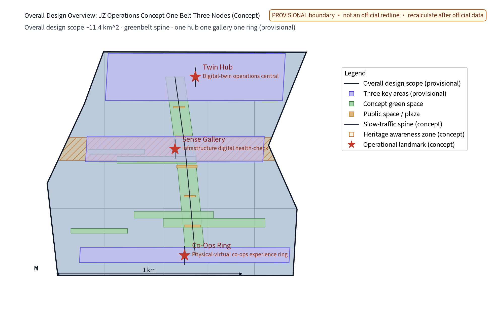
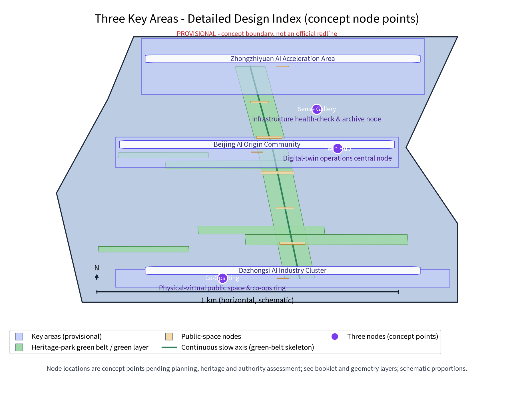
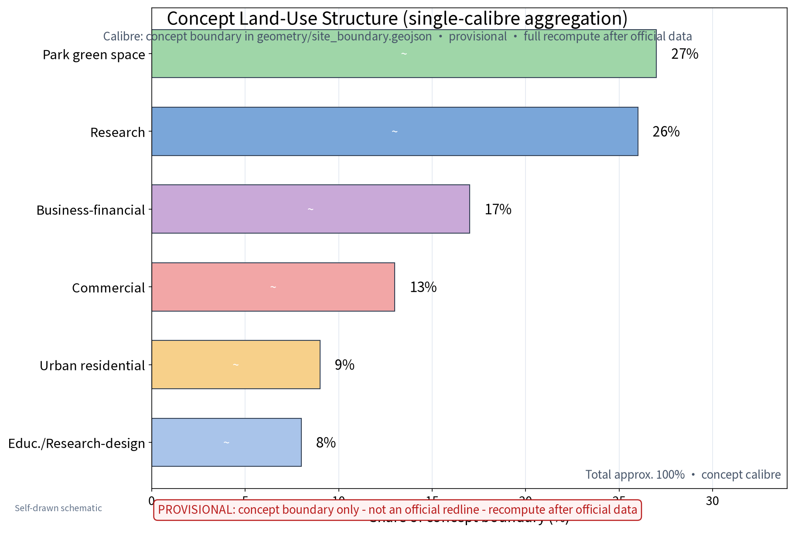
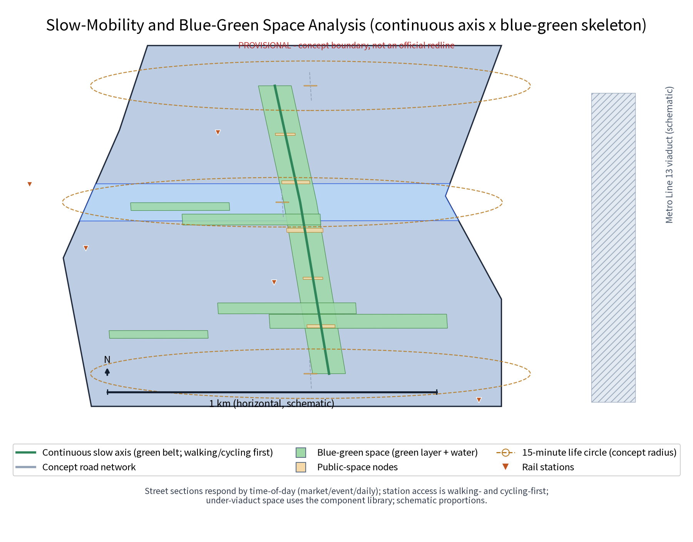
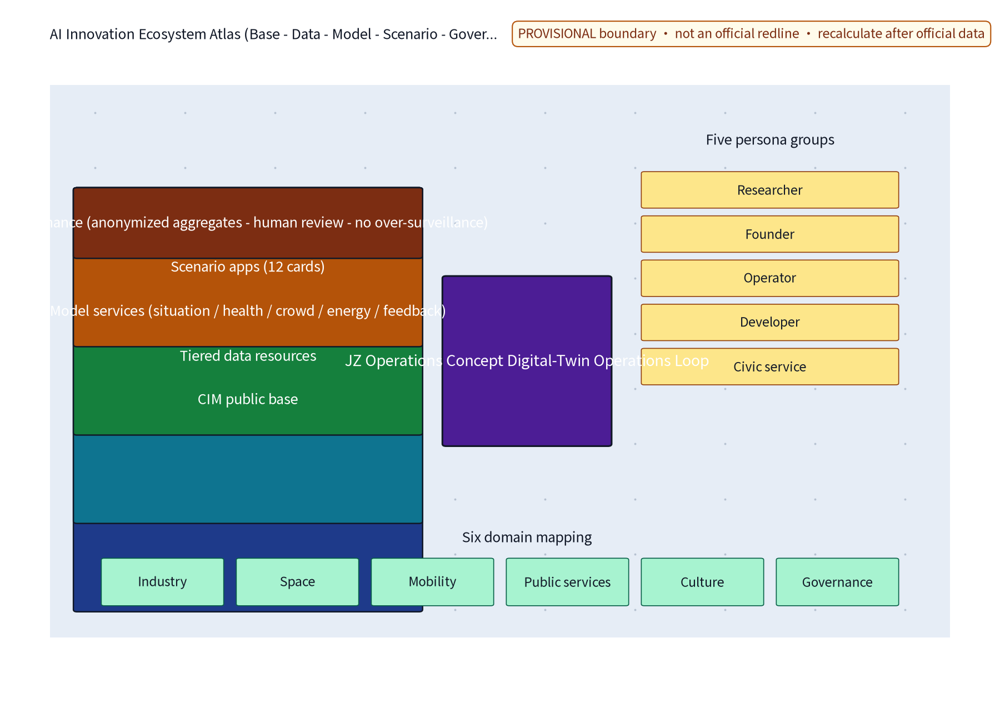
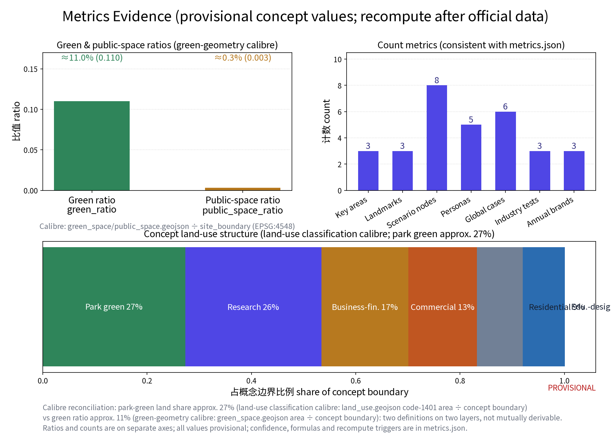

Overview Map
Overall design overview: green-belt skeleton, three areas and two wings, three nodes; station names are public-reference only, not official redlines. Figures are self-drawn schematics (matplotlib), not official basemaps.

Three-Layer Scopes
Boundary note: the organizer has not published verifiable coordinate-system polygons; figures and areas here are for concept display and discussion only; full recompute when official geometry is released.
Key Areas
Three nodes linked along the green belt into one continuous digital operations route: Twin Hub (CIM base + co-ops operations hub), Sense Gallery (infrastructure digital health-check and archive), Co-Ops Ring (physical-virtual public space and co-ops experience ring). Landmark catalogue: Co-Ops Tower, Rail Memory Gallery, Under-Viaduct Co-Living Pavilion; honour displays run on public-notice, record-filing and points systems. Node locations are concept points requiring professional assessment before relocation.

Land-Use Zones
Concept land-use structure (share of the concept boundary, single-calibre aggregation, provisional): park green space approx. 27%, research approx. 26%, business-financial approx. 17%, commercial approx. 13%, urban residential approx. 9%, education/research-design approx. 8%. Retention-renovation-demolition stays parallel with retention first; all values use whole per cent with an approx. prefix and are recomputed from the same calibre after official data.

Slow Mobility
Slow-traffic-first mobility: a continuous slow-traffic axis along the green belt links the three nodes; street sections respond by time-of-day (market / event / daily modes); pedestrian-flow and activity forecasts support time-split zone management; station-city coordination with walking- and cycling-first access; municipal works are intensive and shared, with facility-diagnosis AI supporting utility inspection.

Blue-Green Public Space
Blue-green public-space system with the green belt as the main ridge and node parks as pearls; under-viaduct and pocket parks are grouped; sensing facilities are light, transparent and reversible and never block heritage remains; wayfinding is unified, restrained and bilingual with tiered guides.
Reversible sensing rackTime-split seatingLight pavilionSmart flash signCo-ops screen kioskThe reversible public-space component library is fully modular with removal plans and restoration paths.
Buildings
Retention-renovation-demolition in parallel, retention first: heritage-park fabric and railway relics preserved; stock buildings get function replacement with reserved digital-upgrade directions (sensing facilities, data interfaces); demolition limited to individually assessed scattered buildings clearing slow routes; no FAR, building height or retention/demolition conclusions are preset.
Renewal Projects
Four project families: CIM-base pilot, sensing-network roll-out, operations-service implant, co-ops platform launch. The implementation matrix follows RACI with explicit leads/collaborators covering data input, spatial conditions, acceptance metrics, human review, privacy boundaries, failure fallback, stop/exit conditions, maintenance and annual evaluation. Phasing: near term 1-3 years (Zhongzhiyuan pilot + Sense Gallery sample section), mid term 3-5 years (nodes completed), long term 5-10 years (area-wide co-ops operations).
| Work package | Phase | Lead | Acceptance metric (key) | Stop and exit conditions |
|---|---|---|---|---|
| CIM-base pilot | Near 1-3 yrs | Data agency | Base availability + indicators online | Two years below target → stop and decommission |
| Sensing network | Near-mid | Municipal utility operator | Sensing coverage, data completeness | False-alarm above threshold → rectify/halt |
| Three nodes | Mid 3-5 yrs | Planning authority | Delivery checklist + cards online | Fails public appraisal → revise and re-appraise |
| Co-ops platform | Mid-long | Operations actor | Cards online, feedback closure | Activity below threshold → decommission function |
| Area-wide co-ops | Long 5-10 yrs | Co-ops alliance | Annual target achievement | Alliance charter defines exit and handover |
AI Scenarios
Five-layer AI innovation ecosystem: CIM base - data resources - model services - scenario applications - governance; five persona groups (research, entrepreneur, operations, developer, public service); twelve AI+ scenario cards and three industry test-and-validation scenarios, each card carrying input data, model task, output, trigger, responsible actor, human veto point, failure mode and evaluation metric.
Three governance sentences: process anonymized aggregate data only; key decisions are human-reviewed; over-surveillance is prohibited. AI protocol directions: model evaluation (benchmarks, held-out sets), data quality, error stratification, runtime monitoring (false-alarm rate, handling latency).

Core Metrics
Provisional concept values below; calibre and recompute triggers in metrics.json; full recompute after official data.
site_area_sqm (concept boundary area)approx. 11.41 km2 green_ratio (concept green ratio)approx. 0.11 public_space_ratio (concept public-space ratio)approx. 0.003
Task Coverage
The compliance matrix maps all 23 tasks (announcement 1.3 - 1.5 entries and agent.1 - agent.6) to proposal sections, geometry layers, metrics, boards and sources; the standard matrix covers 5 professional standards and the design-depth matrix covers 15 depth items; each evidence summary points to distinct real content in the proposal.
agent.1 belt conceptagent.2 AI ecosystemagent.3 AI+ scenariosagent.4 space & landmarksagent.5 culture narrativeagent.6 events & operationsSelf-Check Status
The four gates (deterministic / spatial / visual / professional) are persisted in self_check.json; machine figure-QC results (ink/clip) are recorded under figure_qc; provisional-boundary notes are known minor items that do not block content scoring.
Sources
Sources and rights are registered item by item in sources.json: the official announcement and taskbook (official wording), public standards and regulations (regulatory planning measures, urban design measures, land-use classification, Barrier-Free Environment Law, generative-AI interim measures), the provisional-boundary source, six global digital-twin case sources (Virtual Singapore, Helsinki 3D+, Zurich, Xiong'an, Shenzhen, Shanghai Lingang) and font/tool licence entries. No official data or link is invented.
Assumptions
Key assumptions are registered in assumptions.json (6 items): provisional boundaries, unknown regulatory and heritage conditions, concept-only data calibres, original concept node points, privacy boundaries, and the event system as design suggestions. Organizer-side data gaps (existing land use, regulatory conditions, heritage clues, municipal capacity, operations baselines) are annotated as to-be-supplemented.